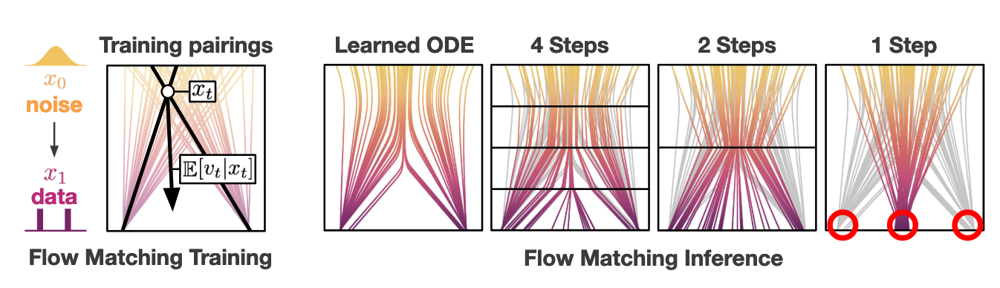
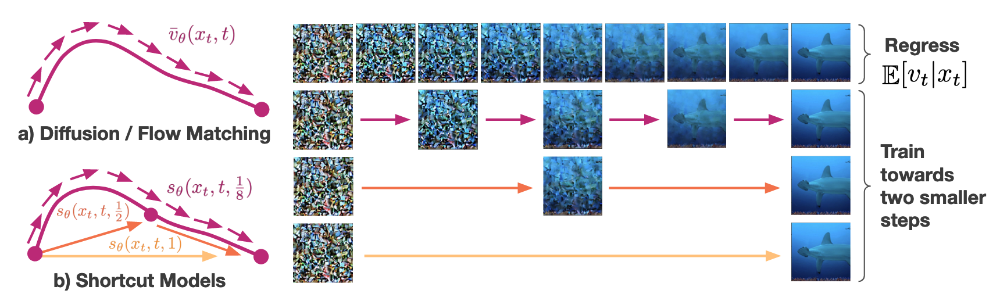
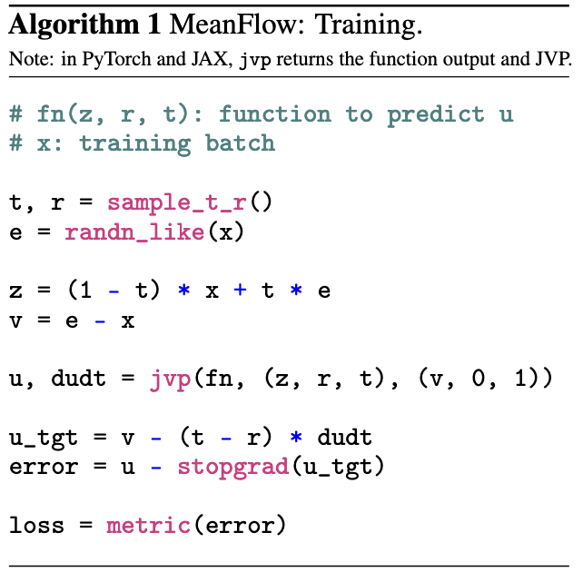
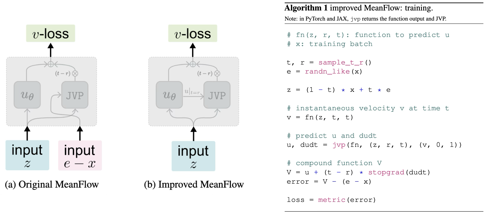
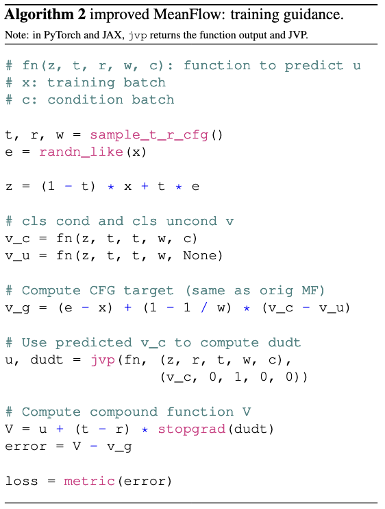
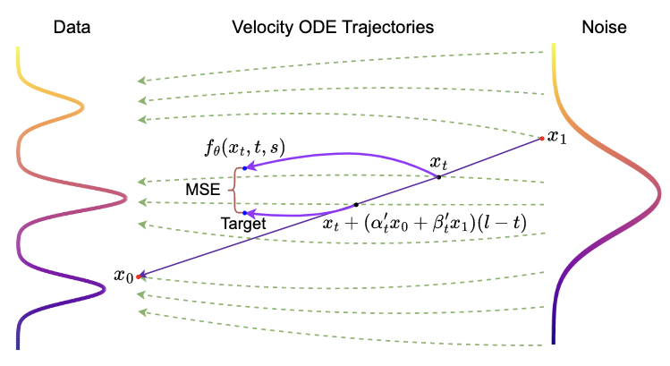

One/Few-step Flow Models
扩散/流模型最明显的短板就是迭代式生成的效率太低，为此人们做出了非常多的努力，大致可以分为以下三类：
- 改进采样器：提出 DDIM, Euler, Heun, DPM-Solver 等一阶或高阶 ODE/SDE 求解器。这类方法的优点在于无需训练，但是很难在 10 步采样以内保持图像质量。
- 模型蒸馏：以预训练扩散模型作为老师，蒸馏一个采样步数更少的学生模型，代表工作包括 Progressive Distillation, Consistency Distillation, Reflow 等。这类方法可以保证几步甚至一步生成的图像质量，但是训练流程麻烦，不是端到端的。
- 构建新的模型族：基于扩散/流模型的理论设计新的模型族，代表工作包括 Consistency Models, Shortcut Models, MeanFlow 等。这类方法可以端到端从头训练，同时支持一步或多步生成，是很有潜力的研究方向。本文主要介绍此类方法。
Flow Matching
首先简要回顾一下 Flow Matching. 在训练的每一步中，Flow Matching 从源分布和目标分布中分别采样 \(\mathbf x_0,\mathbf x_1\)，然后做线性插值 \(\mathbf x_t=(1-t)\mathbf x_0+t\mathbf x_1\)，模型 \(\mathbf v_\theta\) 以 \(\mathbf x_t\) 为输入，预测速度方向 \(\mathbf v_t=\dot{\mathbf x}_t=\mathbf x_1-\mathbf x_0\)，即： \[ \mathcal L^\text{FM}(\theta)=\mathbb E_{(\mathbf x_0,\mathbf x_1),t}\left[\Vert\mathbf v_\theta(\mathbf x_t,t)-(\mathbf x_1-\mathbf x_0)\Vert_2^2\right] \] 考虑某个特定的 \(\mathbf x_t\)，它在整个训练过程中可能由不同的 \((\mathbf x_0,\mathbf x_1)\) 插值得到，每次回归一个速度方向，于是最终将收敛到这些速度方向的条件期望： \[ \mathbf v_\theta^\ast(\mathbf x_t,t)=\mathbb E[\mathbf v_t\vert\mathbf x_t] \] 训练结束后，模型 \(\mathbf v^\ast_\theta(\mathbf x_t,t)\) 给出了空间中的一个速度场，从源分布中的任一点出发，沿该速度场运动就完成了一次采样。形式化地说，采样过程就是求解如下 ODE 的过程： \[ \mathrm d\mathbf x_t=\mathbf v_\theta^\ast(\mathbf x_t,t)\mathrm dt \] 值得注意的是，模型最终学习到的采样轨迹是弯曲的，这导致大步长采样存在较大的离散误差。极端情况下，如果我们做一步采样，那么采样出来的其实是目标分布的平均点： \[ \text{One-step FM Sampling:}\quad\mathbf x_0+\mathbb E[\mathbf v_0\vert\mathbf x_0]\cdot 1=\mathbb E[\mathbf x_1\vert\mathbf x_0]=\mathbb E[\mathbf x_1] \]

Shortcut Models
Shortcut Models 的核心思想是将采样步长 \(d\) 作为条件加入网络，使得网络能够考虑到采样轨迹的曲率，进而给出跨出 \(d\) 步长后准确的位置。直观上，Flow Matching 可以解释为学习瞬时速度，而 Shortcut Models 意在学习 \(d\) 时间内的平均速度。若模型得到了充分的学习，那么当 \(d=1\) 时，模型就给出了跨越整条采样轨迹的速度方向，从而实现一步采样。

Shortcut
具体而言，记 \(\mathbf s(\mathbf x_t,t,d)\) 表示 \(t\) 时刻位于 \(\mathbf x_t\) 处且步长为 \(d\) 的 shortcut，定义为： \[ \mathbf x_{t+d}=\mathbf x_t+\mathbf s(\mathbf x_t,t,d)d \] 不难发现它具有两条性质：
极限性质：当步长无限小时，平均速度趋向于瞬时速度，此时 shortcut 就是 Flow Matching 中的速度场： \[ \lim_{d\to 0}\mathbf s(\mathbf x_t,t,d)=\lim_{d\to0}\frac{\mathbf x_{t+d}-\mathbf x_t}{d}=\dot{\mathbf x}_t \]
自一致性：跨一个 \(2d\) 步长等价于先跨一个 \(d\) 步长、再跨一个 \(d\) 步长： \[ \mathbf s(\mathbf x_t,t,2d)=\mathbf s(\mathbf x_t,t,d)/2+\mathbf s(\mathbf x_{t+d},t+d,d)/2 \]
我们希望训练一个模型 \(\mathbf s_\theta(\mathbf x_t,t,d)\) 去近似 shortcut： \[ \mathbf s_\theta(\mathbf x_t,t,d)\xrightarrow{\text{approximate}}\mathbf s(\mathbf x_t,t,d) \] 如此即可实现一步/少步采样。
Training
基于 shortcut 的两条性质，设计如下的损失函数： \[ \begin{align} &\mathcal L^\text{SM}(\theta)=\mathbb E_{(\mathbf x_0,\mathbf x_1),(t,d)}\Big[ \underbrace{\Vert\mathbf s_\theta(\mathbf x_t,t,0)-(\mathbf x_1-\mathbf x_0)\Vert_2^2}_{\text{Flow Matching}} + \underbrace{\Vert\mathbf s_\theta(\mathbf x_t,t,2d)-\mathbf s_\text{target}\Vert_2^2}_{\text{Self-Consistency}} \Big]\\ \text{where}\quad&\mathbf s_\text{target}=\mathbf s_\theta(\mathbf x_t,t,d)/2+s_\theta(~\underbrace{\mathbf x_t+\mathbf s_\theta(\mathbf x_t,t,d)d}_{\mathbf x'_{t+d}}~,t+d,d)/2 \end{align} \] 可以看见损失函数由两部分构成，分别对应极限性质和自一致性。直观上，Flow Matching 部分保证在小步长下模型给出的轨迹贴合真实的采样轨迹，而自一致性部分保证模型在大步长下的轨迹逼近小步长下的轨迹。二者联合训练，实现单阶段、端到端的从头训练。
Shortcut Models 的训练过程可以解释为一个自蒸馏的过程：如果我们分阶段训练不同步长，即先训练小步长，再训练大步长，那不就是 Progressive Distillation 吗！从这个角度上说，Shortcut Models 也可以视作 Progressive Distillation 的端到端训练版本。
虽然理论简单，但是实践中作者引入了不少工程设计：
- 时间离散化：尽管理论上 \(d\) 可以取连续值，但作者只在离散时间步上训练自一致性。具体而言，步长 \(d\) 采样自 \(\left\{1/128,1/64,\ldots,1/2,1\right\}\)，而时间步 \(t\) 取为 \(d\) 的倍数。
- 批次分比例优化：对一个 batch 的数据，取其中 \(3/4\) 用于训练 Flow Matching，剩下 \(1/4\) 用于训练自一致性。由于自一致性的目标 \(s_\text{target}\) 包含额外的前向传播，因此训练代价比 Flow Matching 部分更高，设置比例后可以保证整个训练代价比普通的扩散模型训练仅多出 16% 左右。
- 提前确定 CFG：由于自一致性涉及到生成目标 \(\mathbf s_\text{target}\)，因此原本不需要在训练时确定的超参数（如 CFG）需要提前确定下来。
- 使用 EMA 权重：同样的道理，生成目标 \(\mathbf s_\text{target}\) 时需要用维护的 EMA 模型生成。
- 调节 weight decay：作者发现 weight decay 对训练的稳定性至关重要，这是因为训练早期 \(\mathbf s_\text{target}\) 无法给出有效的目标，影响收敛，调节合适的 weight decay 可以缓解不稳定性。
训练及采样算法如下图所示：

MeanFlow
Shortcut Models 人为确定离散时间步的做法略显笨拙，而 Kaiming 组的 MeanFlow 则给出了一个更优雅的解决方案。直观上，MeanFlow 可以视为 Shortcut Models 的连续时间版本，它将后者在离散时间步上的一致性约束推广为了连续时间上的微分方程约束。
Average Velocity
MeanFlow 的思想依旧是用一个双时间步模型学习 ODE 轨迹的平均速度。形式化地说，设 \(t\in[0,1]\) 表示时间步，\(\mathbf x_t\) 为 \(t\) 的函数，表示一条轨迹。记 \(\mathbf v(\mathbf x_t,t)\) 表示 \(t\) 时刻 \(\mathbf x_t\) 处的瞬时速度，则从 \(r\) 时刻到 \(t\) 时刻的平均速度定义为： \[ \mathbf u(\mathbf x_t,r,t){\;\mathrel{\vcenter{:}}=\;}\frac{1}{t-r}\int_r^t\mathbf v(\mathbf x_\tau,\tau)\mathrm d\tau \] 根据该定义，平均速度场自然满足 Shortcut Models 中提到的两条性质：
- 极限性质：当 \(r\to t\) 时，\(\mathbf u(\mathbf x_t,r,t)\to\mathbf v(\mathbf x_t,t)\).
- 自一致性：对任意 \(r<s<t\)，有 \((t-r)\mathbf u(\mathbf x_t,r,t)=(s-r)\mathbf u(\mathbf x_s,r,s)+(t-s)\mathbf u(\mathbf x_t,s,t)\).
我们的目标就是学习一个模型 \(\mathbf u_\theta(\mathbf x_t,r,t)\) 去近似平均速度： \[ \mathbf u_\theta(\mathbf x_t,r,t)\xrightarrow{\text{approximate}}\mathbf u(\mathbf x_t,r,t) \] 如果可以做到这一点，那么推理时就可以跨任意步长采样了，包括一步采样。
MeanFlow Identity
由于平均速度的定义包含积分，我们难以直接回归它。为此，作者巧妙地将积分等式转换为了微分等式。首先移项得： \[
(t-r)\mathbf u(\mathbf x_t,r,t)=\int_r^t\mathbf v(\mathbf x_\tau,\tau)\mathrm d\tau
\] 视 \(r\) 与 \(t\) 无关，两边对 \(t\) 求导得： \[
\mathbf u(\mathbf x_t,r,t)+(t-r)\frac{\mathrm d}{\mathrm dt}\mathbf u(\mathbf x_t,r,t)=\mathbf v(\mathbf x_t,t)
\] 整理有： \[
\underbrace{\mathbf u(\mathbf x_t,r,t)}_\text{average vel.}=\underbrace{\mathbf v(\mathbf x_t,t)}_\text{instant. vel.}-(t-r)\underbrace{\frac{\mathrm d}{\mathrm dt}\mathbf u(\mathbf x_t,r,t)}_\text{time derivative}
\] 称此式为 MeanFlow Identity. 其中，对时间求导一项可进一步展开如下： \[
\frac{\mathrm d}{\mathrm dt}\mathbf u(\mathbf x_t,r,t)=\partial_1\mathbf u\cdot\frac{\mathrm d\mathbf x_t}{\mathrm dt}+\partial_2\mathbf u\cdot\frac{\mathrm dr}{\mathrm dt}+\partial_3\mathbf u\cdot\frac{\mathrm dt}{\mathrm dt}=\partial_1\mathbf u\cdot\mathbf v(\mathbf x_t,t)+\partial_3\mathbf u
\] 若写作矩阵形式，则为： \[
\frac{\mathrm d}{\mathrm dt}\mathbf u(\mathbf x_t,r,t)=\underbrace{\bigg[\begin{matrix}\partial_1\mathbf u&\partial_2\mathbf u&\partial_3\mathbf u\end{matrix}\bigg]}_{\text{Jacobian of }\mathbf u}\begin{bmatrix}\mathbf v(\mathbf x_t,t)\\0\\1\end{bmatrix}=\texttt{JVP}(\mathbf u,\mathbf v(\mathbf x_t,t))
\] 即 \(\mathbf u\) 的 Jacobian 矩阵与一个向量的乘积，这可通过深度学习框架 (PyTorch/JAX) 中封装好的 jvp (Jacobian-vector product) 算子高效实现，我们用记号 \(\texttt{JVP}(\mathbf u,\mathbf v(\mathbf x_t,t))\) 表示这一操作。
现在，我们只需训练一个模型 \(\mathbf u_\theta(\mathbf x_t,r,t)\) 使其满足 MeanFlow Identity 即可。根据 MeanFlow Identity 的形式，自然可以构造如下损失函数： \[ \begin{align} &\mathcal L(\theta)=\mathbb E_{(\mathbf x_0,\mathbf x_1),r,t}\left[\Vert\mathbf u_\theta(\mathbf x_t,r,t)-\text{sg}(\mathbf u_\text{tgt})\Vert_2^2\right]\\ \text{where}\quad&\mathbf u_\text{tgt}=\mathbf v(\mathbf x_t,t)-(t-r)\texttt{JVP}(\mathbf u_\theta,\mathbf v(\mathbf x_t,t)) \end{align} \] 其中 \(\text{sg}(\cdot)\) 是停止梯度操作，防止计算 Jacobian 矩阵后还需对网络二次求导，提升训练效率。由于上述损失函数在计算 \(\mathbf u_\text{tgt}\) 时依赖于未知的瞬时速度场 \(\mathbf v(\mathbf x_t,t)\)，作者用单次采样下的条件瞬时速度 \(\mathbf v_t=\dot{\mathbf x}_t=\mathbf x_1-\mathbf x_0\) 替代之，得到最终损失函数： \[ \begin{align} &\mathcal L(\theta)=\mathbb E_{(\mathbf x_0,\mathbf x_1),r,t}\left[\Vert\mathbf u_\theta(\mathbf x_t,r,t)-\text{sg}(\mathbf u_\text{tgt})\Vert_2^2\right]\\ \text{where}\quad&\mathbf u_\text{tgt}=\mathbf v_t-(t-r)\texttt{JVP}(\mathbf u_\theta,\mathbf v_t) \end{align} \] 综上，MeanFlow 模型的训练算法流程如下：

实践中，L2 度量可以更改为其他度量，作者在论文中主要考虑 \(\Vert\Delta\Vert_2^{2\gamma}\) 的形式。由进一步推导可知，该形式等价于给 L2 度量加上自适应权重 \(w=1/(\Vert\Delta\Vert_2^2+c)^{p}\)，其中 \(p=1-\gamma,\,c>0\). 实验发现 \(p=1\) 是最好的选择。
Guidance
传统上，CFG 是用在采样过程中的，代价是让推理时延变成了原来的两倍。MeanFlow 作者指出，我们其实可以在训练时就引入 CFG，让模型学习 CFG 后的速度场，即可在保持推理时延的同时享受 CFG 的好处。
具体而言，施加 CFG 后的速度场为： \[ \mathbf v^{\text{cfg}}(\mathbf x_t,t\vert\mathbf c){\;\mathrel{\vcenter{:}}=\;}\omega\mathbf v(\mathbf x_t,t\vert\mathbf c)+(1-\omega)\mathbf v(\mathbf x_t,t\vert\varnothing) \] 相应的平均速度场记为 \(\mathbf u^\text{cfg}(\mathbf x_t,r,t\vert\mathbf c)\). 依照上一节的推导，MeanFlow Identity 相应更改为： \[ \mathbf u^\text{cfg}(\mathbf x_t,r,t\vert\mathbf c)=\mathbf v^\text{cfg}(\mathbf x_t,t\vert\mathbf c)-(t-r)\frac{\mathrm d}{\mathrm dt}\mathbf u^\text{cfg}(\mathbf x_t,r,t\vert\mathbf c) \] 其中对时间求导一项可进一步展开为： \[ \frac{\mathrm d}{\mathrm dt}\mathbf u^\text{cfg}(\mathbf x_t,r,t\vert\mathbf c)=\texttt{JVP}(\mathbf u^\text{cfg},\mathbf v^\text{cfg}(\mathbf x_t,t\vert\mathbf c)) \] 于是损失函数更改为： \[ \begin{align} &\mathcal L(\theta)=\mathbb E_{(\mathbf x_0,\mathbf x_1,\mathbf c),r,t}\left[\left\Vert\mathbf u^\text{cfg}_\theta(\mathbf x_t,r,t\vert\mathbf c)-\text{sg}(\mathbf u_\text{tgt})\right\Vert_2^2\right]\\ \text{where}\quad&\mathbf u_\text{tgt}=\mathbf v^\text{cfg}(\mathbf x_t,t\vert\mathbf c)-(t-r)\texttt{JVP}(\mathbf u_\theta^\text{cfg},\mathbf v^\text{cfg}(\mathbf x_t,t\vert\mathbf c)) \end{align} \] 同样的道理，这里 \(\mathbf v^\text{cfg}(\mathbf x_t,t\vert\mathbf c)\) 是未知的，需要替换为已知的量。注意 \(\mathbf v^\text{cfg}(\mathbf x_t,t\vert\mathbf c)\) 是由两部分 \(\mathbf v(\mathbf x_t,t\vert\mathbf c)\) 和 \(\mathbf v(\mathbf x_t,t\vert\varnothing)\) 线性组合构成的，第一部分依旧用单次采样的速度 \(\mathbf v_t=\dot{\mathbf x}_t=\mathbf x_1-\mathbf x_0\) 替代即可，所以问题主要在于第二部分如何处理。针对这一问题，作者敏锐地发现施加 CFG 并不影响无条件速度场： \[ \mathbf v^\text{cfg}(\mathbf x_t,t\vert\varnothing)=\mathbb E_\mathbf c[\mathbf v^\text{cfg}(\mathbf x_t,t\vert\mathbf c)]=\omega\mathbb E_\mathbf c[\mathbf v(\mathbf x_t,t\vert\mathbf c)]+(1-\omega)\mathbf v(\mathbf x_t,t\vert\varnothing)=\mathbf v(\mathbf x_t,t\vert\varnothing) \] 又 \(\mathbf v^\text{cfg}(\mathbf x_t,t\vert\varnothing)\) 也可以写作 \(\mathbf u^\text{cfg}(\mathbf x_t,t,t\vert\varnothing)\)，因此 CFG 速度场可以改写作： \[ \mathbf v^{\text{cfg}}(\mathbf x_t,t\vert\mathbf c)=\omega\mathbf v(\mathbf x_t,t\vert\mathbf c)+(1-\omega)\mathbf u^\text{cfg}(\mathbf x_t,t,t\vert\varnothing) \] 更进一步地，作者还讨论了用 \(\mathbf u^\text{cfg}(\mathbf x_t,t,t\vert\mathbf c)\) 和 \(\mathbf u^\text{cfg}(\mathbf x_t,t,t\vert\varnothing)\) 按 \(\kappa\) 比例混合作为 \(\mathbf v(\mathbf x_t,t\vert\varnothing)\) 的近似： \[ \mathbf v^{\text{cfg}}(\mathbf x_t,t\vert\mathbf c)=\omega\mathbf v(\mathbf x_t,t\vert\mathbf c)+\kappa\mathbf u^\text{cfg}(\mathbf x_t,t,t\vert\mathbf c)+(1-\omega-\kappa)\mathbf u^\text{cfg}(\mathbf x_t,t,t\vert\varnothing) \] 由于 \(\mathbf u^\text{cfg}(\mathbf x_t,t,t\vert\mathbf c)\) 就是 \(\mathbf v^{\text{cfg}}(\mathbf x_t,t\vert\mathbf c)\)，因此上式其实等价于用 \(\omega'=\frac{\omega}{1-\kappa}\) 作为 CFG： \[ \mathbf v^{\text{cfg}}(\mathbf x_t,t\vert\mathbf c)=\frac{\omega}{1-\kappa}\mathbf v(\mathbf x_t,t\vert\mathbf c)+\frac{1-\omega-\kappa}{1-\kappa}\mathbf u^\text{cfg}(\mathbf x_t,t,t\vert\varnothing) \] 现在，我们只需用 \(\mathbf v_t\) 替代 \(\mathbf v(\mathbf x_t,t\vert\mathbf c)\)、用模型 \(\mathbf u_\theta^\text{cfg}\) 替代 \(\mathbf u^\text{cfg}\) 即可： \[ \begin{align} &\mathcal L(\theta)=\mathbb E_{(\mathbf x_0,\mathbf x_1,\mathbf c),r,t}\left[\left\Vert\mathbf u^\text{cfg}_\theta(\mathbf x_t,r,t\vert\mathbf c)-\text{sg}(\mathbf u_\text{tgt})\right\Vert_2^2\right]\\ \text{where}\quad&\mathbf u_\text{tgt}=\tilde{\mathbf v}_t-(t-r)\texttt{JVP}(\mathbf u_\theta^\text{cfg},\tilde{\mathbf v}_t)\\ &\tilde{\mathbf v}_t=\omega\mathbf v_t+\kappa\mathbf u^\text{cfg}_\theta(\mathbf x_t,t,t\vert\mathbf c)+(1-\omega-\kappa)\mathbf u_\theta^\text{cfg}(\mathbf x_t,t,t\vert\varnothing) \end{align} \] 为训练无条件模型，在训练过程中以 10% 的概率丢弃条件。
Improved MeanFlow (iMF)
MeanFlow 虽然效果不错，但是存在两个问题：1. 其训练目标不是一个标准的回归问题；2. 其训练依赖于预先固定的 CFG，缺乏灵活性。为此作者提出了 improved MeanFlow (iMF).
Reformulation
回顾一下 MeanFlow 的训练损失函数： \[ \begin{align} &\mathcal L(\theta)=\mathbb E_{(\mathbf x_0,\mathbf x_1),r,t}\left[\Vert\mathbf u_\theta(\mathbf x_t,r,t)-\text{sg}(\mathbf u_\text{tgt})\Vert_2^2\right]\\ \text{where}\quad&\mathbf u_\text{tgt}=\mathbf v_t-(t-r)\texttt{JVP}(\mathbf u_\theta,\mathbf v_t) \end{align} \] 在计算 JVP 时，我们进行了两种近似：
- 用条件瞬时速度 \(\mathbf v_t\) 代替了真实瞬时速度 \(\mathbf v(\mathbf x_t,t)\)，这引入了较大的方差，影响训练的稳定性；
- 用平均速度模型 \(\mathbf u_\theta\) 代替了真实平均速度 \(\mathbf u(\mathbf x_t,r,t)\)，这使得 MeanFlow 并不是一个标准的回归问题，因为回归目标里包含模型本身。
事实上，MeanFlow Identity 可以改写为： \[ \mathbf v(\mathbf x_t,t)=\mathbf u(\mathbf x_t,r,t)+(t-r)\frac{\mathrm d}{\mathrm dt}\mathbf u(\mathbf x_t,r,t) \] 这样式子左侧没有 \(\mathbf u\)，可以作为一个标准的回归目标。而 \(\mathbf v(\mathbf x_t,t)\) 正是 Flow Matching 要回归的真实速度场，因此 MeanFlow 本质上可以视为 \(\mathbf u_\theta\) 重参数化下的 Flow Matching： \[ \begin{align} &\mathcal L(\theta)=\mathbb E_{(\mathbf x_0,\mathbf x_1),r,t}\left[\left\Vert V_\theta(\mathbf x_t,\mathbf v_t,r,t)-(\mathbf x_1-\mathbf x_0)\right\Vert_2^2\right]\\ \text{where}\quad&V_\theta(\mathbf x_t,\mathbf v_t,r,t)=\mathbf u_\theta(\mathbf x_t,r,t)+(t-r)\texttt{JVP}_\text{sg}(\mathbf u_\theta,\mathbf v_t) \end{align} \] 有趣的是，\(V_\theta\) 包含 \(\mathbf v_t\) 作为输入，同时目标又是预测 \(\mathbf v_t=\mathbf x_1-\mathbf x_0\). 这是因为计算 JVP 时需要用到 \(\mathbf v_t\)——等等，真的吗？回顾一下，JVP 中的 \(\mathbf v_t\) 的作用是替代真实瞬时速度 \(\mathbf v(\mathbf x_t,t)\)，但我们完全可以用另一个模型 \(\mathbf v_\theta\) 来近似 \(\mathbf v(\mathbf x_t,t)\)，而非用 \(\mathbf v_t\) 替代。因此，上述损失可以改写作： \[ \begin{align} &\mathcal L(\theta)=\mathbb E_{(\mathbf x_0,\mathbf x_1),r,t}\left[\left\Vert V_\theta(\mathbf x_t,r,t)-(\mathbf x_1-\mathbf x_0)\right\Vert_2^2\right]\\ \text{where}\quad&V_\theta(\mathbf x_t,r,t)=\mathbf u_\theta(\mathbf x_t,r,t)+(t-r)\texttt{JVP}_\text{sg}(\mathbf u_\theta,\mathbf v_\theta) \end{align} \] 具体而言，\(\mathbf v_\theta\) 有两种实现方式：
- 由于当 \(r\to t\) 时，\(\mathbf u(\mathbf x_t,r,t)\to\mathbf v(\mathbf x_t,t)\)，因此我们可以用 \(\mathbf u_\theta(\mathbf x_t,t,t)\) 来表示 \(\mathbf v_\theta(\mathbf x_t,t)\)；
- 给网络新加一个 head 作为 \(\mathbf v_\theta\).
下图展示了 MF 与 iMF 的区别，以及 iMF 的训练算法（均以第一种实现方式为例）：

Flexible Guidance
在 MeanFlow 中，CFG 需要在训练前固定下来，这影响了推理时的灵活性。更重要的是，更强的模型（如更多参数量、更长的训练、更多的推理 NFE）往往需要更小的 CFG. 因此，MeanFlow 中固定 CFG 的做法并不够好。为此，iMF 将 CFG 作为条件给到模型，从而在推理时可以选择不同的 CFG. 事实上，这一做法在扩散蒸馏（如 FLUX schnell）中已有应用。
具体而言，在 \(\omega\) 的 CFG 下真实速度场为： \[ \mathbf v(\mathbf x_t,t\vert\mathbf c,\omega){\;\mathrel{\vcenter{:}}=\;}\omega\mathbf v(\mathbf x_t,t\vert\mathbf c)+(1-\omega)\mathbf v(\mathbf x_t,t\vert\varnothing) \] 相应的平均速度场记为 \(\mathbf u(\mathbf x_t,r,t\vert\mathbf c,\omega)\). 则改写后的 MeanFlow Identity 为： \[ \mathbf v(\mathbf x_t,t\vert\mathbf c,\omega)=\mathbf u(\mathbf x_t,r,t\vert\mathbf c,\omega)+(t-r)\frac{\mathrm d}{\mathrm dt}\mathbf u(\mathbf x_t,r,t\vert\mathbf c,\omega) \] 左侧是我们的回归目标，可以写作： \[ \begin{align} \mathbf v(\mathbf x_t,t\vert\mathbf c,\omega)&=\mathbf v(\mathbf x_t,t\vert\mathbf c)+(\omega-1)\big(\mathbf v(\mathbf x_t,t\vert\mathbf c)-\mathbf v(\mathbf x_t,t\vert\varnothing)\big)\\ &=\mathbf v(\mathbf x_t,t\vert\mathbf c)+(\omega-1)\left[\frac{1}{\omega}\Big(\mathbf v(\mathbf x_t,t\vert\mathbf c,\omega)-(1-\omega)\mathbf v(\mathbf x_t,t\vert\varnothing)\Big)-\mathbf v(\mathbf x_t,t\vert\varnothing)\right]\\ &=\mathbf v(\mathbf x_t,t\vert\mathbf c)+\left(1-\frac{1}{\omega}\right)\big(\mathbf v(\mathbf x_t,t\vert\mathbf c,\omega)-\mathbf v(\mathbf x_t,t\vert\varnothing)\big)\\ &=\mathbf v(\mathbf x_t,t\vert\mathbf c)+\left(1-\frac{1}{\omega}\right)\big(\mathbf u(\mathbf x_t,t,t\vert\mathbf c,\omega)-\mathbf u(\mathbf x_t,t,t\vert\varnothing)\big) \end{align} \] 基于此，第一部分用单次采样的速度 \(\mathbf v_t=\mathbf x_1-\mathbf x_0\) 替代，第二部分用模型 \(\mathbf u_\theta\) 替代 \(\mathbf u\)，于是最终损失函数为： \[ \begin{align} &\mathcal L(\theta)=\mathbb E_{(\mathbf x_0,\mathbf x_1,\mathbf c),r,t,\omega}\left[\left\Vert V_\theta(\mathbf x_t,r,t\vert\mathbf c,\omega)-V_\text{tgt}\right\Vert^2_2\right]\\ \text{where}\quad&V_\text{tgt}=\mathbf x_1-\mathbf x_0+\left(1-\frac{1}{\omega}\right)\big(\mathbf u_\theta(\mathbf x_t,t,t\vert\mathbf c,\omega)-\mathbf u_\theta(\mathbf x_t,t,t\vert\varnothing)\big)\\ &V_\theta(\mathbf x_t,r,t\vert\mathbf c,\omega)=\mathbf u_\theta(\mathbf x_t,r,t\vert\mathbf c,\omega)+(t-r)\texttt{JVP}_\text{sg}(\mathbf u_\theta,\mathbf v_\theta) \end{align} \]
其中 \(\mathbf v_\theta(\mathbf x_t,t\vert\mathbf c,\omega)\) 依旧实现为 \(\mathbf u_\theta(\mathbf x_t,t,t\vert\mathbf c,\omega)\) 即可，算法流程如下：

进一步地，我们还可以将 CFG interval 也作为条件加入模型，即只在 \([t_\min,t_\max]\) 时间内施加 CFG. 此时模型的 guidance 条件为 \(\Omega=\{\omega,t_\min,t_\max\}\)，而训练过程中计算回归目标时，对于 \(t\notin[t_\min,t_\max]\)，设置 \(\omega=1\) 即可。
In-context Conditioning
可以看到，iMF 涉及到非常多的条件：双时间步 \((r,t)\)、条件 \(\mathbf c\)、guidance \(\Omega\). 在传统的 DiT 架构中，这些条件是被全部加起来后通过 adaLN-zero 引入网络的。但是当条件数量多起来后，把它们全部加起来似乎不那么合理了。作者发现，尽管 DiT 中 in-context conditioning 方式（即按 sequence 维度拼接 token）不如 adaLN-zero，但是如果每种条件多复制几个 token，效果还是不错的。这一做法也在 MAGE, JiT 等模型中使用过。更重要的是，DiT 的逐层 adaLN-zero 会消耗非常多的参数，这其实是一个设计缺陷。In-context conditioning 反而节约不少参数量，有利于进一步扩大模型规模。
SoFlow
MeanFlow 最大的问题是依赖于 JVP 操作，导致训练需要更多的时间和显存。为了解决这个问题，SoFlow 采用一阶导近似绕过了 JVP 操作。
Formulation
SoFlow 同样是基于双时间步模型，但它不是预测平均速度，而是预测 ODE 的解。具体而言，设 \(\mathbf f(\mathbf x_t,t,s)\) 表示已知初值 \(\mathbf x_t\) 下，ODE \(\mathrm d\mathbf x_s=\mathbf v(\mathbf x_s,s)\mathrm ds\) 的解（换句话说，随着 \(s\) 改变，\(\mathbf f(\mathbf x_t,t,s)\) 形成该 ODE 的一条轨迹），那么有： \[ \begin{gather} \mathbf f(\mathbf x_t,t,t)=\mathbf x_t\\ \partial_3\mathbf f(\mathbf x_t,t,s)=\mathbf v(\mathbf f(\mathbf x_t,t,s),s) \end{gather} \] 等价地，这两个式子可以用如下一个式子描述： \[ \mathbf f(\mathbf x_t,t,s)=\mathbf x_t+\int_t^s\mathbf v(\mathbf f(\mathbf x_t,t,u),u)\mathrm du \] 如果两边同时对 \(t\) 求导，可得： \[ \partial_1\mathbf f(\mathbf x_t,t,s)\mathbf v(\mathbf x_t,t)+\partial_2\mathbf f(\mathbf x_t,t,s)=\mathbf v(\mathbf x_t,t)-\mathbf v(\mathbf f(\mathbf x_t,t,t),t)=\mathbf 0 \] 我们希望训练一个模型 \(\mathbf f_\theta\) 去近似 \(\mathbf f\)： \[ \mathbf f_\theta(\mathbf x_t,t,s)\xrightarrow{\text{approximate}}\mathbf f(\mathbf x_t,t,s) \] 那么根据上文描述，只需让 \(\mathbf f_\theta\) 满足下述两个条件即可： \[ \begin{gather} \mathbf f_\theta(\mathbf x_t,t,t)=\mathbf x_t\\ \partial_1\mathbf f_\theta(\mathbf x_t,t,s)\mathbf v(\mathbf x_t,t)+\partial_2\mathbf f_\theta(\mathbf x_t,t,s)=\mathbf 0 \end{gather} \]
附（与 MeanFlow 的联系）：可以看到，SoFlow 的 \(\mathbf f\) 表示从 \(t\) 到 \(s\) 轨迹的“终点”，而 MeanFlow 的 \(\mathbf u\) 表示这一段轨迹的平均速度，因此二者其实有如下关系： \[\mathbf x_t-\mathbf f(\mathbf x_t,t,s)=(t-s)\mathbf u(\mathbf x_t,s,t)\] 两边同时对 \(t\) 求导有： \[\mathbf v(\mathbf x_t,t)-\partial_1\mathbf f(\mathbf x_t,t,s)\mathbf v(\mathbf x_t,t)-\partial_2\mathbf f(\mathbf x_t,t,s)=\mathbf u(\mathbf x_t,s,t)+(t-s)\frac{\mathrm d}{\mathrm dt}\mathbf u(\mathbf x_t,s,t)\] 回顾 MeanFlow Identity： \[\mathbf v(\mathbf x_t,t)=\mathbf u(\mathbf x_t,s,t)+(t-s)\frac{\mathrm d}{\mathrm dt}\mathbf u(\mathbf x_t,s,t)\] 联立可知： \[\partial_1\mathbf f(\mathbf x_t,t,s)\mathbf v(\mathbf x_t,t)+\partial_2\mathbf f(\mathbf x_t,t,s)=\mathbf 0\] 如此我们借助 MeanFlow 的结论推出了同样的约束条件。这也说明了 SoFlow 和 MeanFlow 本质上是一回事，因此我认为本文的重点不在于形式化，而在于如何绕开 JVP 操作，见下一节。
Objectives
Reparameterization：首先，作者对模型做了重参数化： \[ \mathbf f_\theta(\mathbf x_t,t,s)=a(t,s)\mathbf x_t+b(t,s)F_\theta(\mathbf x_t,t,s) \] 其中 \(F_\theta\) 是真正的网络，系数 \(a,b\) 满足 \(a(t,t)=1,\,b(t,t)=0\) 以使得边界条件 \(\mathbf f_\theta(\mathbf x_t,t,t)=\mathbf x_t\) 恒成立。作者主要考虑如下两种形式：
- Euler: \(\mathbf f_\theta(\mathbf x_t,t,s)=\mathbf x_t+(s-t)F_\theta(\mathbf x_t,t,s)\). 根据上一节的注释，此时 \(F_\theta\) 其实就是 MeanFlow 的 \(\mathbf u_\theta\).
- Trigonometric: \(\mathbf f_\theta(\mathbf x_t,t,s)=\cos\left(\frac{\pi}{2}(s-t)\right)\mathbf x_t+\sin\left(\frac{\pi}{2}(s-t)\right)F_\theta(\mathbf x_t,t,s)\).
Flow Matching Loss：当 \(s=t\) 时，对任意 \(\mathbf x_t\) 都有 \(\mathbf f_\theta(\mathbf x_t,t,t)=\mathbf x_t\) 恒成立，因此： \[ \partial_1\mathbf f_\theta(\mathbf x_t,t,t)=I,\quad\frac{\partial\,\mathbf f_\theta(\mathbf x_t,l,l)}{\partial l}\Big|_{l=t}=\partial_2\mathbf f_\theta(\mathbf x_t,t,t)+\partial_3\mathbf f_\theta(\mathbf x_t,t,t)=\mathbf 0 \] 结合约束条件 \(\partial_1\mathbf f(\mathbf x_t,t,s)\mathbf v(\mathbf x_t,t)+\partial_2\mathbf f(\mathbf x_t,t,s)=\mathbf 0\)，可知： \[ \begin{align} \partial_3\mathbf f_\theta(\mathbf x_t,t,t)&=\mathbf v(\mathbf f_\theta(\mathbf x_t,t,t),t)=\mathbf v(\mathbf x_t,t)\\ &=\partial_2a(t,t)\mathbf x_t+\partial_2b(t,t)F_\theta(\mathbf x_t,t,s)+\underbrace{b(t,t)}_0\partial_3F_\theta(\mathbf x_t,t,t) \end{align} \] 这说明我们要训练一个 Flow Matching: \[ \mathcal L_\text{FM}(\theta)=\mathbb E_{t,\mathbf x_0,\mathbf x_1}\left[\left\Vert \partial_2a(t,t)\mathbf x_t+\partial_2b(t,t)F_\theta(\mathbf x_t,t,t)-\mathbf v(\mathbf x_t,t)\right\Vert^2_2\right] \] 用单次采样速度 \(\mathbf v_t=\mathbf x_1-\mathbf x_0\) 替换未知的真实速度 \(\mathbf v(\mathbf x_t,t)\)，得： \[ \mathcal L_\text{FM}(\theta)=\mathbb E_{t,\mathbf x_0,\mathbf x_1}\left[\left\Vert \partial_2a(t,t)\mathbf x_t+\partial_2b(t,t)F_\theta(\mathbf x_t,t,t)-(\mathbf x_1-\mathbf x_0)\right\Vert^2_2\right] \] 为与前文保持一致，这里默认为线性插值，实际上作者试了不同的插值方式以及动态权重，详见论文。
Solution Consistency Loss：对于 \(s<t\)，回顾我们需要满足的约束条件： \[ \partial_1\mathbf f_\theta(\mathbf x_t,t,s)\mathbf v(\mathbf x_t,t)+\partial_2\mathbf f_\theta(\mathbf x_t,t,s)=\mathbf 0 \] 在 MeanFlow 中，这直接实现为 JVP 操作。为了避免 JVP，SoFlow 考虑用一阶导去近似真正的导数。具体而言，将 \(\mathbf f_\theta(\mathbf x_t,t,s)\) 在 \(t=l\) 处做泰勒展开： \[ \mathbf f_\theta(\mathbf x_t,t,s)=\mathbf f_\theta(\mathbf x_t+\mathbf v(\mathbf x_t,t)(l-t),l,s)+(t-l)\big(\partial_1\mathbf f_\theta(\mathbf x_t,t,s)\mathbf v(\mathbf x_t,t)+\partial_2\mathbf f_\theta(\mathbf x_t,t,s)\big)+o(t-l) \] 其中 \(l\in(s,t)\) 充分接近 \(t\). 丢弃高阶项，代入约束条件得： \[ \frac{\mathbf f_\theta(\mathbf x_t,t,s)-\mathbf f_\theta(\mathbf x_t+\mathbf v(\mathbf x_t,t)(l-t),l,s)}{t-l}=\mathbf 0 \] 因此我们只需满足： \[ \mathbf f_\theta(\mathbf x_t,t,s)=\mathbf f_\theta(\mathbf x_t+\mathbf v(\mathbf x_t,t)(l-t),l,s) \] 据此构造损失函数： \[ \mathcal L_\text{SCM}(\theta)=\mathbb E_{t,l,s,\mathbf x_0,\mathbf x_1}\left[\left\Vert \mathbf f_\theta(\mathbf x_t,t,s)-\mathbf f_{\theta^-}(\mathbf x_t+\mathbf v(\mathbf x_t,t)(l-t),l,s)\right\Vert_2^2\right] \] 其中 \(\theta^-\) 表示 stop gradient. 由于真实速度 \(\mathbf v(\mathbf x_t,t)\) 是未知的，我们用单次采样的速度 \(\mathbf v_t=\mathbf x_1-\mathbf x_0\) 替代之，因此损失函数化作： \[ \mathcal L_\text{SCM}(\theta)=\mathbb E_{t,l,s,\mathbf x_0,\mathbf x_1}\left[\left\Vert \mathbf f_\theta(\mathbf x_t,t,s)-\mathbf f_{\theta^-}(\mathbf x_t+(\mathbf x_1-\mathbf x_0)(l-t),l,s)\right\Vert_2^2\right] \] 该损失可以直观可视化为下图。

附（与 Consistency Models 的联系）：可以看见，如果固定 \(s=0\)，则 SoFlow 就变成了 Consistency Models.
Guidance
SoFlow 对 CFG 的处理和 MeanFlow 是类似的。具体而言，FM 和 SCM 损失都被修改为 CFG 版本： \[ \begin{gather} \mathcal L^\text{cfg}_\text{FM}(\theta)=\mathbb E_{t,\mathbf x_0,\mathbf x_1}\left[\left\Vert \partial_2a(t,t)\mathbf x_t+\partial_2b(t,t)F_\theta^\text{cfg}(\mathbf x_t,t,t\vert\mathbf c)-\mathbf v^\text{cfg}(\mathbf x_t,t\vert\mathbf c)\right\Vert^2_2\right]\\ \mathcal L^\text{cfg}_\text{SCM}(\theta)=\mathbb E_{t,l,s,\mathbf x_0,\mathbf x_1}\left[\left\Vert \mathbf f_\theta^\text{cfg}(\mathbf x_t,t,s\vert\mathbf c)-\mathbf f_{\theta^-}^\text{cfg}(\mathbf x_t+\mathbf v^\text{cfg}(\mathbf x_t,t\vert\mathbf c)(l-t),l,s\vert\mathbf c)\right\Vert_2^2\right] \end{gather} \] 其中真实速度 \(\mathbf v^\text{cfg}(\mathbf x_t,t\vert\mathbf c)=\omega\mathbf v(\mathbf x_t,t\vert\mathbf c)+(1-\omega)\mathbf v(\mathbf x_t,t\vert\varnothing)\) 未知，且 \(\mathbf v(\mathbf x_t,t\vert\varnothing)\) 不可由采样近似。同 MeanFlow 类似，我们按比例丢弃条件训练一个无条件模型 \(F_\theta^\text{cfg}(\mathbf x_t,t,s\vert\varnothing)\)，则无条件部分 \(\mathbf v(\mathbf x_t,t\vert\varnothing)\) 可近似为： \[ \mathbf v(\mathbf x_t,t\vert\varnothing)\approx\mathbf v_\text{uncond}=\partial_2a(t,t)\mathbf x_t+\partial_2b(t,t)F_{\theta^-}^\text{cfg}(\mathbf x_t,t,t\vert\varnothing) \] 条件部分按正常的采样 \(\mathbf v_t\) 近似，则有： \[ \mathbf v^\text{cfg}(\mathbf x_t,t\vert\mathbf c)\approx\omega\mathbf v_t+(1-\omega)\mathbf v_\text{uncond} \] 另外，它也可用模型近似为： \[ \mathbf v^\text{cfg}(\mathbf x_t,t\vert\mathbf c)\approx\mathbf v_\text{guided}=\partial_2a(t,t)\mathbf x_t+\partial_2b(t,t)F_{\theta^-}^\text{cfg}(\mathbf x_t,t,t\vert\mathbf c) \] 二者相比，前者方差大、偏差小，后者方差小、偏差大，因此我们引入一个权重 \(m\) 做方差-偏差 trade-off: \[ \mathbf v^\text{cfg}(\mathbf x_t,t\vert\mathbf c)\approx\mathbf v_\text{mix}=m(\omega\mathbf v_t+(1-\omega)\mathbf v_\text{uncond})+(1-m)\mathbf v_\text{guided} \] 实验的确发现较小的 \(m\) (0.25) 降低了方差，有助于模型的训练。